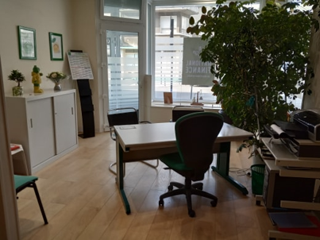
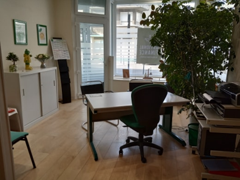

NATIONAL FINANCE
Votre expert en rachats de crédits à Boulogne sur Mer depuis 2005

 

NATIONAL FINANCE s'engage à rechercher la solution qui répondra au mieux à votre situation et à vous apporter une meilleure sérénité dans la gestion de votre budget. L’agence NATIONAL FINANCE à Boulogne sur Mer vous reçoit en toute confidentialité au 78 de la rue Nationale, du lundi au samedi, sur rendez-vous.